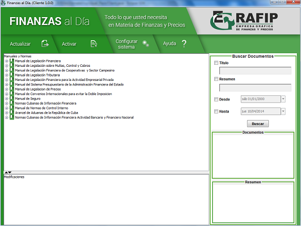
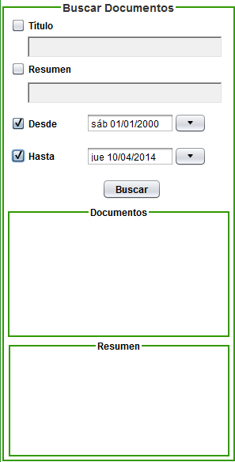

Información General
Al ejecutar la aplicación, dando clic sobre el icono Finanzas al Día, se mostrará la pantalla principal de la misma y será cargada la información de los documentos publicados. La pantalla principal de la aplicación contiene un menú con las principales opciones que se pueden realizar, una estructura que contiene los manuales y resoluciones vigentes, una estructura con las modificaciones realizadas a los documentos, un panel de resumen donde se describen los documentos de manera general y un panel de búsqueda que consta de diferentes filtros para realizar las búsquedas.

Una vez cargados los datos en la aplicación se podrá navegar, consultar y realizar distintas búsquedas dentro del cuerpo de resoluciones legales que distribuye el Ministerio de Finanzas y Precios. El menú principal de la aplicación está compuesto por un conjunto de opciones tales como: Opción "Actualizar", Opción "Activar", Opción "Configurar Sistema" y Opción "Ayuda".
Por otra parte, a los paneles "Manuales y Normas" y "Modificaciones" se les puede ajustar el tamaño mediante la barra separadora que se encuentra entre ambos, como es usual en las ventanas de Windows. Es importante hacer notar que todas las ventanas tienen límites en su redimensionamiento para garantizar la integridad del sistema.
El panel de búsqueda permite realizar las búsquedas aplicando diferentes filtros a los documentos.
